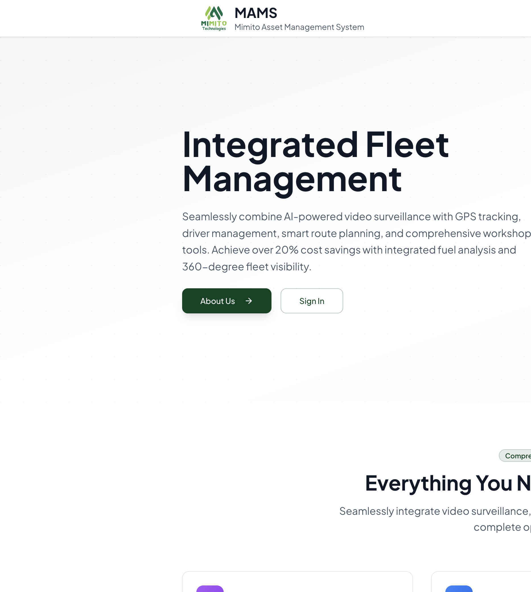

MAMS User Manual
Complete guide for the Client portal and Admin portal — where to find things, what to click, and how to run day-to-day fleet operations.
Part A — Getting started
Open the platform
- Open Chrome, Edge, or Safari.
- Go to https://mams.frontstardigital.com.
- Click Sign In.

Sign in
- Enter Email and Password.
- Click Sign In.
- Client users land in
/app/…; platform admins land in/admin/….
Also need Wialon? Use Open Wialon Hosting — MAMS remains your operations dashboard.
Who sees what
Client roles
| Role | Access |
|---|---|
| Client Admin | All enabled modules; manage users under Settings |
| Manager | Most operational modules with write access |
| Operator | Dashboard, Monitoring, Alerts, Routes (typically) |
| Viewer | Dashboard, Monitoring, Alerts — view only |
Platform roles
| Role | Access |
|---|---|
| Super Admin | Full admin portal including System Users |
| Platform Admin | Admin portal (clients, integrations, system) |
Your left sidebar only lists modules enabled for your organisation.
Part B — Client portal
After login: client branding in the shell, left navigation, main workspace, and often a Live refresh indicator.
Dashboard
Path: Sidebar → Dashboard · /app/dashboard
- Set the date range (From / To).
- Apply / Execute so KPIs match that period.
- Review fuel, alerts, and fleet tiles.
- Use quick links to jump into Monitoring, Fuel, Alerts, etc.
Monitoring
Path: Sidebar → Monitoring · /app/monitoring
Inspect an asset
- Search or select the unit.
- Read location, fuel, engine hours, and Sensors (named readings).
- Use Map / Track / Commands as needed.
Fuel
Path: Sidebar → Fuel · /app/fuel
| Tab | Covers |
|---|---|
| Vehicles | Road assets with fuel sensors |
| Generators | Gensets and stationary tanks (bowsers / tankers) |
| Machinery | Plant / machinery when configured |
| Reports | Run Wialon fuel report templates |
| Variance | Station vs sensor fills (when available) |
Use the fuel table & charts
- Open the correct category tab.
- Pick Today / 7d / 14d / 30d or custom dates.
- Refresh if data looks stale; search for an asset.
- Charts below use the same period and filter as the table.
- Set price per liter under costing if you need money views.
Run a fuel report
- Fuel → Reports.
- Choose report template, unit or group, and period.
- Click Run report.
- Open each table tab (and chart / Fuel Graph tabs when present).
- Export CSV (all tables) or Download PDF / Print / PDF for a branded pack with all tables.
Workshop
Path: /app/workshop — inspections, maintenance, breakdowns, costing, and workshop reports. Log jobs against the correct asset; use costing for period spend.
Alerts
Path: /app/alerts
- Filter by severity / category / date.
- Open an alert for time, asset, and description.
- Acknowledge handled items.
Related events also appear under Monitoring → Events.
Other modules (when enabled)
| Module | Use for |
|---|---|
| Surveillance | Cameras, live video, playback, video events |
| Drivers | Driver roster & reports |
| Routes | Route planning & tracking |
| Geofencing | Zones & zone reports |
| Commands | Remote device commands |
| Trailers / Sensors / Emissions | As enabled for your tenant |
Settings
| Tab | Who | What |
|---|---|---|
| Account | Everyone | Your profile / password options |
| Users | Client Admin+ | Create and manage client users |
Logo and brand colours are set by platform admins, not in client Settings.
Daily client checklist
- Dashboard — apply today’s period.
- Monitoring — critical assets online.
- Fuel — fills, use, drops; correct tab for bowsers/gensets.
- Alerts — acknowledge new items.
- Workshop — open jobs.
- Fuel → Reports — export management packs as needed.
Part C — Admin portal
Path: /admin/… · Super Admin & Platform Admin only.
Sidebar: Dashboard · Clients · Client Users · System Users (super only) · System · Integrations · Wialon / LocoNav / TrackSolid Centers · Support · My Account.
Clients (tenants)
Path: /admin/tenants
Create
- Clients → New client.
- Set name, slug, status, limits, manager.
- Save, then open client detail.
Configure (detail tabs)
| Tab | Actions |
|---|---|
| General | Identity, status, limits |
| Integrations | Wialon / LocoNav / TrackSolid credentials |
| Branding | Logo, favicon, colours → Save Branding |
| Modules | Enable what the client sidebar may show |
| Fuel Module | Tenant fuel options |
| Users | Client users & roles |
| Migration / Backup / Audit / API Keys | Go-live & support |
System & integrations
- System → Login media — login slides and Trusted by logos (Figure 2).
- Integrations marketplace — global plugins on/off.
- Wialon Center — mother accounts, hierarchy, tenant linking.
- LocoNav / TrackSolid Centers — provider-specific ops.
- Support — onboarding & webhook URLs.
New-client go-live checklist
- Create client → General.
- Connect Wialon (Integrations).
- Confirm assets in Wialon Center / client Monitoring.
- Enable Modules.
- Set Branding.
- Configure Fuel Module if needed.
- Create Client Admin; verify client login.
- Spot-check Fuel tabs and one Fuel → Reports run.
- Confirm login media if required.
- Hand over credentials + Part B of this manual.
Part D — Reports, print & PDF
- CSV for spreadsheet work (Fuel can export all tables).
- PDF / Print for branded packs with tables and charts.
- Multi-table reports include every table, not only the active tab.
- After a deploy, refresh once if print modules fail to load.
Part E — Desktop, tablet & mobile
| Device | Guidance |
|---|---|
| Desktop | Best for maps, multi-table reports, admin |
| Tablet | Full UI; landscape for Monitoring |
| Phone | Login & alerts fine; use larger screen for deep Fuel reports / Track |
Part F — Troubleshooting
| Symptom | Try this |
|---|---|
| Can’t sign in | Reset password; confirm account active |
| Module missing | Enable module for the client (admin) |
| Empty Fuel table | Widen dates; Refresh; correct tab; check sync |
| Bowser under Vehicles | Should be Generators — contact support if wrong |
| Print/PDF error | Hard refresh; retry; use CSV meanwhile |
| Dashboard ≠ Fuel numbers | Same dates + Execute/Refresh on both |
Part G — Glossary
| Term | Meaning |
|---|---|
| MAMS | Mimito Asset Management System |
| Client / Tenant | One customer organisation |
| Unit / Asset | Tracked object (vehicle, generator, bowser, …) |
| FLS | Fuel level sensor |
| Bowser | Fuel storage tank — under Generators in Fuel |
| Wialon | Telematics platform behind many reports |